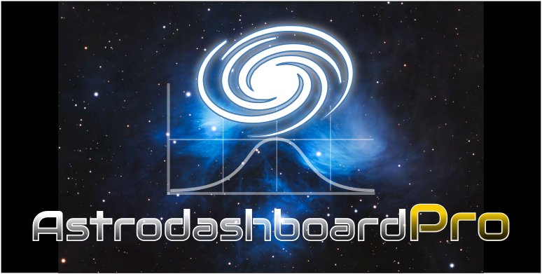

LANGUAGE

v5.5.0-Global


v5.5.0-Global
-- "/px
--° x --°
AstroDashboard nasce da una domanda semplice: perché devo usare quattro programmi diversi per pianificare una notte? La risposta è questa piattaforma — un unico ambiente che fonde meteo in tempo reale, planetario predittivo, calcolo ottico, generazione di sequenze e automazione hardware.
Il software ha due anime distinte. Nella modalità Smart sei un astronauta in cabina automatica: descrivi il tuo setup e il sistema calcola per te tempi, pose e bilanciamento filtri. Nella modalità PRO sei il comandante manuale: tu decidi ogni singolo parametro e il software si occupa solo di tradurre le tue scelte in una sequenza perfetta per N.I.N.A.
Prima di puntare il telescopio, devi sapere cosa ti aspetta sopra la testa. Questa sezione aggrega dati satellitari professionali in tempo reale direttamente nel tuo browser.
Il planetario non mostra semplicemente le stelle: calcola in tempo reale l'altitudine sull'orizzonte di ogni oggetto e ti presenta solo i target fotografi camente utili per la tua nottata.
Questa sezione trasforma i dati fisici del tuo strumento in informazioni operative: quanti arcsec copre il tuo sensore? L'oggetto entra nel campo? A che angolo devi orientare la camera?
In modalità Smart il sistema è il tuo assistente esperto. Analizzi il target, comunichi le caratteristiche del tuo setup e lasci che l'algoritmo generi una sequenza bilanciata e ottimizzata per le condizioni di quella specifica notte.
Il modulo PRO ribalta la logica: non chiede al sistema cosa fare, ma esegue esattamente quello che decidi tu. È lo strumento per chi ha già un piano preciso in testa e vuole tradurlo in una sequenza N.I.N.A. professionale senza compromessi.
Quando un progetto richiede più ore di quante ne offre una singola notte, la Progettazione Multinotte ti permette di distribuire il lavoro su più sessioni mantenendo sempre il controllo sul progresso complessivo.